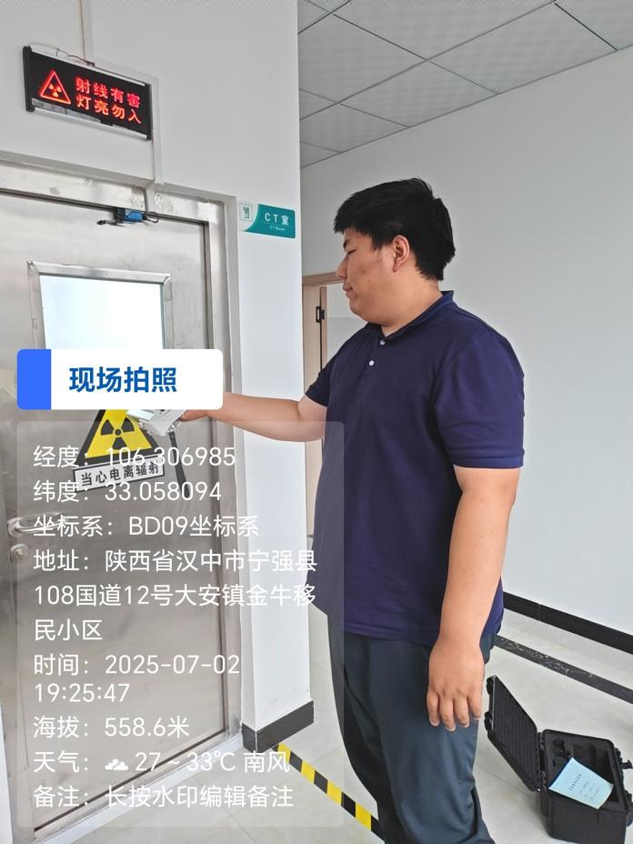
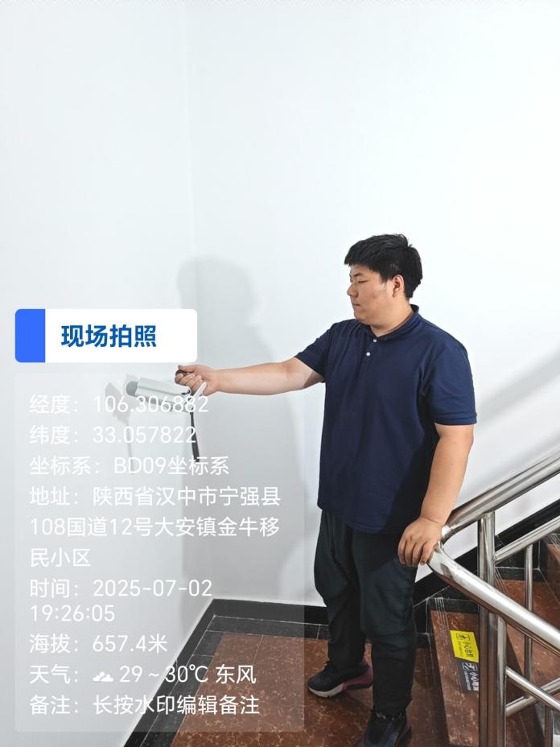

检 测 报 告
QNJC-2025-0293-FW
项目名称： | 放射诊疗工作场所辐射防护检测 |
委托单位： | 宁强县牙卫仕口腔诊所 |
检测性质： | 委托检测 |
报告日期： | 2025年7月16日 |
陕西秦洲核与辐射安全技术有限公司
（检验检测专用章）
检 测 报 告
QNJC-2025-0293-FW
项目名称： | 放射诊疗工作场所辐射防护检测 |
委托单位： | 宁强县牙卫仕口腔诊所 |
检测性质： | 委托检测 |
报告日期： | 2025年7月16日 |
陕西秦洲核与辐射安全技术有限公司
（检验检测专用章）
报告说明
1.本报告适用于陕西秦洲核与辐射安全技术有限公司电离辐射、电磁辐射等项目的检测报告。
2.报告无陕西秦洲核与辐射安全技术有限公司“检验检测专用章”、无骑缝章、无章、无编制人、审核人、签发人签字无效。
3.本公司接受委托送检的，其检验检测数据、结果仅证明样品所检验检测项目的符合性情况。
4.如委托单位对本报告检测数据有异议，应于收到本报告之日起十五日内向本公司提出书面申诉，逾期则视为认可检测结果。
5.本报告全部或部分复制，私自转让、盗用、冒用、涂改或以其他任何形式篡改的均属无效。
6.未经我公司同意，不得用于委托范围之外的其他商业用途。
7.*为分包检测结果。
名 称：陕西秦洲核与辐射安全技术有限公司
地 址：陕西省西咸新区沣西新城中国西部科技创新港创科大厦12层
电 话：029-89586445
传 真：029-89586445
网 址：www.qznrs.net
邮政编码：712046

项目名称 | 放射诊疗工作场所辐射防护检测 | 放射诊疗工作场所辐射防护检测 | 放射诊疗工作场所辐射防护检测 | ||||||
委托单位 | 宁强县牙卫仕口腔诊所 | 宁强县牙卫仕口腔诊所 | 宁强县牙卫仕口腔诊所 | ||||||
检测地点 | 陕西省汉中市宁强县大安镇金牛小区 | 陕西省汉中市宁强县大安镇金牛小区 | 陕西省汉中市宁强县大安镇金牛小区 | ||||||
联系人 | 宁昌茹 | 联系电话 | 173 9255 0843 | ||||||
检测类别 | 电离辐射 | 委托编号 | QNJC-2025-0293-FW | ||||||
检测因子 | X、γ辐射剂量率 | 检测日期 | 2025年7月2日 | ||||||
检测依据 | 《辐射环境监测技术规范》（HJ 61-2021） 《放射诊断放射防护要求》（GBZ 130-2020） | 《辐射环境监测技术规范》（HJ 61-2021） 《放射诊断放射防护要求》（GBZ 130-2020） | 《辐射环境监测技术规范》（HJ 61-2021） 《放射诊断放射防护要求》（GBZ 130-2020） | ||||||
评价依据 | 《放射诊断放射防护要求》（GBZ 130-2020） | 《放射诊断放射防护要求》（GBZ 130-2020） | 《放射诊断放射防护要求》（GBZ 130-2020） | ||||||
检测结果及结论 | 检测结果详见表3；检测结论详见表4 | 检测结果详见表3；检测结论详见表4 | 检测结果详见表3；检测结论详见表4 | ||||||
附件 | 现场检测照片 | 现场检测照片 | 现场检测照片 | ||||||
备注 | / | / | / | ||||||
一、检测仪器及模体
表1 检测仪器基本信息
仪器名称 | 仪器型号 | 仪器编号 | 测量范围 | 溯源单位/证书编号 | 有效期至 |
X、γ辐射剂量仪 | AT1123 | QNJC-YQ-101 | 1)连续测试： 50nSv/h~10Sv/h 2)单次脉冲或一系列脉冲： 5μSv/h~10Sv/h | 河南省计量测试科学研究院/证书编号1024BY0501104G1 | 2025.07.11 |
防护用标准水模体（尺寸30cm×30cm×20cm。） | PWST-100 | QNJC-YQ-102 | / | / | / |
铜板（尺寸30cm×30cm×1.5mm） | / | / | / | / | / |
CT体模（尺寸Φ32cm×15cm） | HB-100 | QNJC-YQ-116 | / | / | / |
CT头模（尺寸Φ16cm×15cm） | HB-100 | QNJC-YQ-116 | / | / | / |
二、射线装置
表2 射线装置基本信息[1]
序号 | 装置名称 | 型号 | 编号 | 生产厂家 | 额定参数 | 使用场所 | 射线装置分类 |
1 | 口腔数字化X射线机 | Point 800s HD 3D Plus | PNC8SP-EFN142C18 | POINTNIX Co.,Ltd. | 90kV 10mA | CBCT室 | Ⅲ类 |
注：[1]委托方提供的信息。
三、检测结果
表3 检测结果
装置名称 | 装置名称 | 口腔数字化X射线机 | 口腔数字化X射线机 | 装置型号 | 装置型号 | Point 800s HD 3D Plus | Point 800s HD 3D Plus | ||||||||||||||||||||||||||||||||||||||||||||||||||||||||
装置编号 | 装置编号 | PNC8SP-EFN142C18 | PNC8SP-EFN142C18 | 生产厂家 | 生产厂家 | POINTNIX Co.,Ltd. | POINTNIX Co.,Ltd. | ||||||||||||||||||||||||||||||||||||||||||||||||||||||||
使用场所 | 使用场所 | CBCT室 | CBCT室 | 本 底 | 本 底 | （0.149～0.153）μSv/h | （0.149～0.153）μSv/h | ||||||||||||||||||||||||||||||||||||||||||||||||||||||||
检测条件 | 检测条件 | 曝光参数：口腔全景模式90kV，16mA，17s，头颅侧位模式90kV，10mA，10s；散射模体：CT头模（尺寸Φ16cm×15cm）；射线方向：该射线装置有用线束方向（头颅侧位模式）朝西墙。 | 曝光参数：口腔全景模式90kV，16mA，17s，头颅侧位模式90kV，10mA，10s；散射模体：CT头模（尺寸Φ16cm×15cm）；射线方向：该射线装置有用线束方向（头颅侧位模式）朝西墙。 | 曝光参数：口腔全景模式90kV，16mA，17s，头颅侧位模式90kV，10mA，10s；散射模体：CT头模（尺寸Φ16cm×15cm）；射线方向：该射线装置有用线束方向（头颅侧位模式）朝西墙。 | 曝光参数：口腔全景模式90kV，16mA，17s，头颅侧位模式90kV，10mA，10s；散射模体：CT头模（尺寸Φ16cm×15cm）；射线方向：该射线装置有用线束方向（头颅侧位模式）朝西墙。 | 曝光参数：口腔全景模式90kV，16mA，17s，头颅侧位模式90kV，10mA，10s；散射模体：CT头模（尺寸Φ16cm×15cm）；射线方向：该射线装置有用线束方向（头颅侧位模式）朝西墙。 | 曝光参数：口腔全景模式90kV，16mA，17s，头颅侧位模式90kV，10mA，10s；散射模体：CT头模（尺寸Φ16cm×15cm）；射线方向：该射线装置有用线束方向（头颅侧位模式）朝西墙。 | ||||||||||||||||||||||||||||||||||||||||||||||||||||||||
序号 | 检测点位描述 | 检测点位描述 | 检测结果（μSv/h） | 序号 | 检测点位描述 | 检测点位描述 | 检测结果 （μSv/h） | ||||||||||||||||||||||||||||||||||||||||||||||||||||||||
1 | 受检者门中表面30cm | 受检者门中表面30cm | 0.154 | 10 | 南墙表面30cm 1#（阅片室） | 南墙表面30cm 1#（阅片室） | 0.161 | ||||||||||||||||||||||||||||||||||||||||||||||||||||||||
2 | 受检者门上缝外30cm | 受检者门上缝外30cm | 0.154 | 11 | 南墙表面30cm 2#（阅片室） | 南墙表面30cm 2#（阅片室） | 0.161 | ||||||||||||||||||||||||||||||||||||||||||||||||||||||||
3 | 受检者门下缝外30cm | 受检者门下缝外30cm | 0.155 | 12 | 西墙表面30cm 1#（操作间） | 西墙表面30cm 1#（操作间） | 0.160 | ||||||||||||||||||||||||||||||||||||||||||||||||||||||||
4 | 受检者门左缝外30cm | 受检者门左缝外30cm | 0.154 | 13 | 西墙表面30cm 2#（操作间） | 西墙表面30cm 2#（操作间） | 0.161 | ||||||||||||||||||||||||||||||||||||||||||||||||||||||||
5 | 受检者门右缝外30cm | 受检者门右缝外30cm | 0.155 | 14 | 北墙表面30cm 1#（水房） | 北墙表面30cm 1#（水房） | 0.161 | ||||||||||||||||||||||||||||||||||||||||||||||||||||||||
6 | 工作人员操作位 | 工作人员操作位 | 0.154 | 15 | 北墙表面30cm 2#（水房） | 北墙表面30cm 2#（水房） | 0.161 | ||||||||||||||||||||||||||||||||||||||||||||||||||||||||
7 | 管线洞口 | 管线洞口 | 0.155 | 16 | 机房楼上（洗消室） | 机房楼上（洗消室） | 0.157 | ||||||||||||||||||||||||||||||||||||||||||||||||||||||||
8 | 东墙表面30cm1#（空地） | 东墙表面30cm1#（空地） | 0.161 | 17 | 机房楼下（库房） | 机房楼下（库房） | 0.157 | ||||||||||||||||||||||||||||||||||||||||||||||||||||||||
9 | 东墙表面30cm2#（空地） | 东墙表面30cm2#（空地） | 0.161 | 18 | 暖通 | 暖通 | 0.159 | ||||||||||||||||||||||||||||||||||||||||||||||||||||||||
注：1.本底值为关机时各检测点位巡测结果； 2.检测结果未扣除本底值，本底值未扣除宇宙射线响应值； 3.西墙（12、13号点位）在头颅侧位模式下测得，其余点位在口腔全景模式下测得。 | 注：1.本底值为关机时各检测点位巡测结果； 2.检测结果未扣除本底值，本底值未扣除宇宙射线响应值； 3.西墙（12、13号点位）在头颅侧位模式下测得，其余点位在口腔全景模式下测得。 | 注：1.本底值为关机时各检测点位巡测结果； 2.检测结果未扣除本底值，本底值未扣除宇宙射线响应值； 3.西墙（12、13号点位）在头颅侧位模式下测得，其余点位在口腔全景模式下测得。 | 注：1.本底值为关机时各检测点位巡测结果； 2.检测结果未扣除本底值，本底值未扣除宇宙射线响应值； 3.西墙（12、13号点位）在头颅侧位模式下测得，其余点位在口腔全景模式下测得。 | 注：1.本底值为关机时各检测点位巡测结果； 2.检测结果未扣除本底值，本底值未扣除宇宙射线响应值； 3.西墙（12、13号点位）在头颅侧位模式下测得，其余点位在口腔全景模式下测得。 | 注：1.本底值为关机时各检测点位巡测结果； 2.检测结果未扣除本底值，本底值未扣除宇宙射线响应值； 3.西墙（12、13号点位）在头颅侧位模式下测得，其余点位在口腔全景模式下测得。 | 注：1.本底值为关机时各检测点位巡测结果； 2.检测结果未扣除本底值，本底值未扣除宇宙射线响应值； 3.西墙（12、13号点位）在头颅侧位模式下测得，其余点位在口腔全景模式下测得。 | 注：1.本底值为关机时各检测点位巡测结果； 2.检测结果未扣除本底值，本底值未扣除宇宙射线响应值； 3.西墙（12、13号点位）在头颅侧位模式下测得，其余点位在口腔全景模式下测得。 | ||||||||||||||||||||||||||||||||||||||||||||||||||||||||
检 测 点 位 图 |
|
|
|
|
|
|
| ||||||||||||||||||||||||||||||||||||||||||||||||||||||||
四、检测结论
表4 检测结论
依据《放射诊断放射防护要求》（GBZ 130-2020），检测结果和评价如下： 口腔数字化X射线机（型号：Point 800s HD 3D Plus，编号：PNC8SP-EFN142C18）机房外各测点周围剂量当量率范围值为：（0.154~0.165）μSv/h，满足上述标准6.3.1 b）中“CT机、乳腺摄影、乳腺CBCT、口内牙片摄影、牙科全景摄影、牙科全景头颅摄影、口腔CBCT和全身骨密度仪机房外的周围剂量当量率应不大于2.5μSv/h”的要求。 |
（报告正文完）
编 制 人： | 审 核 人： | 签 发 人： | 检验检测专用章 |
编 制 人： | 审 核 人： | 签 发 人： | 签发日期： |
附件：
 |
 |
现场检测照片